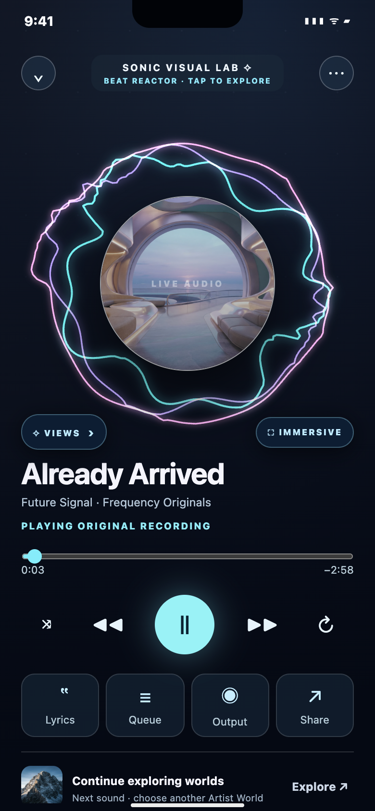
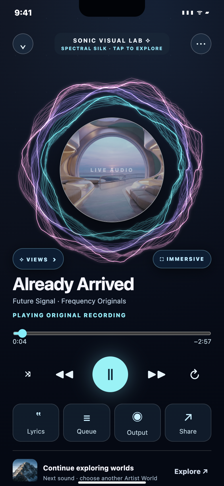
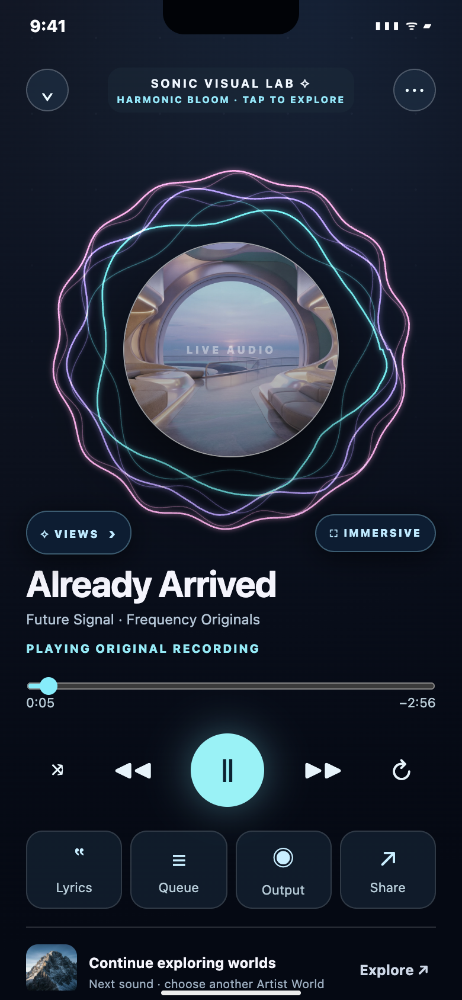
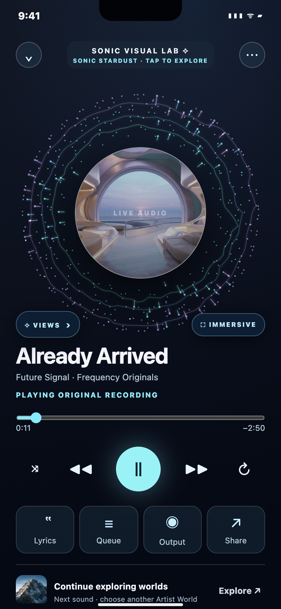
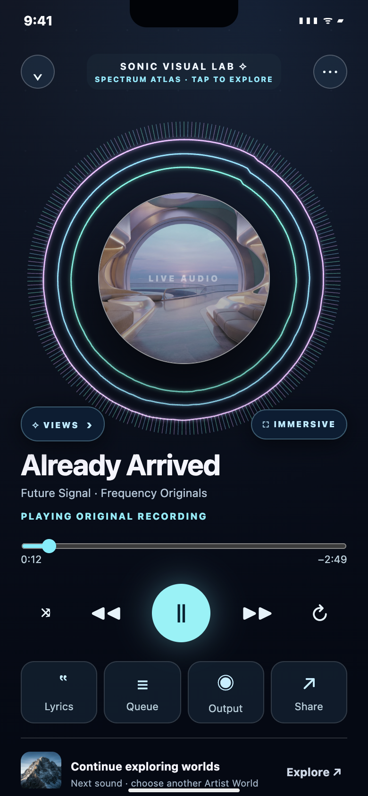
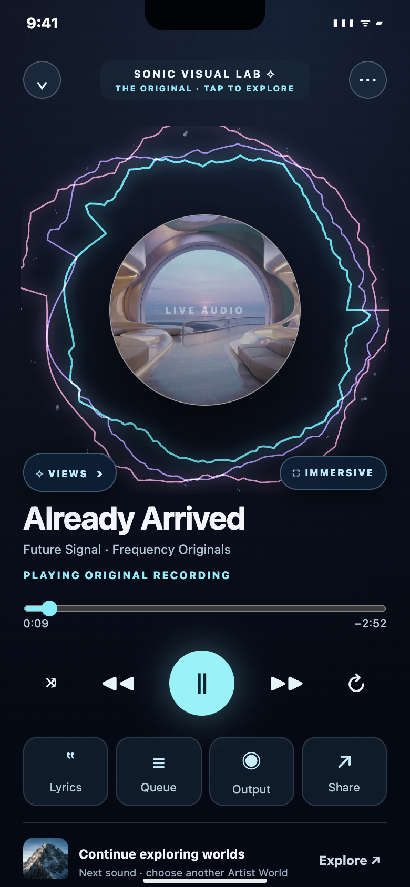
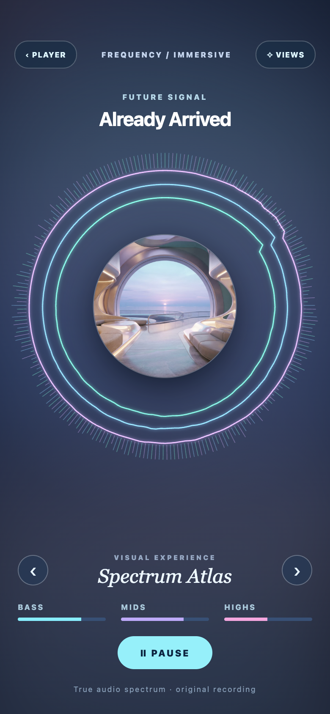
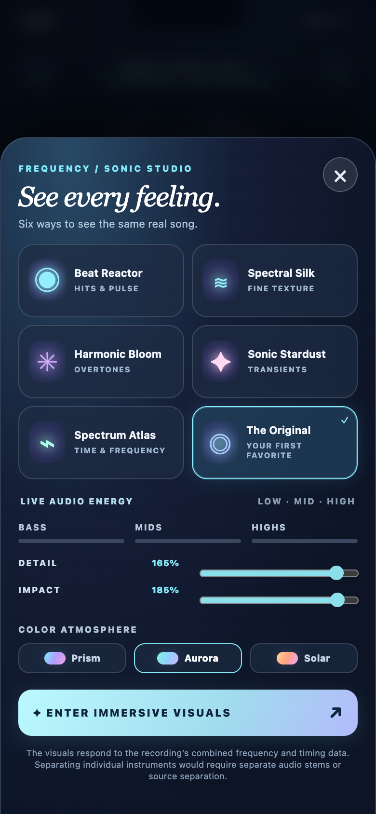

Six ways to feel a song.
These are real screenshots of the interactive prototype, not unrelated inspiration art. Choose a view, press Play, tap ✧ VIEWS and try changing Detail, Impact or the palette. Immersive mode makes the music the main event.
✧ OPEN INTERACTIVE SONIC LAB







The visuals represent mixed audio spectrum and timing information; they cannot identify an individual voice or instrument without source separation. This is a browser concept, not the native Frequency iOS app.